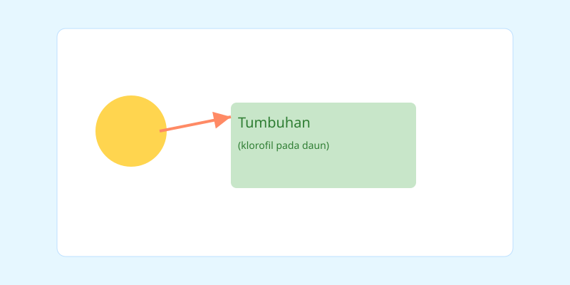

Fotosintesis
Fotosintesis adalah proses tumbuhan mengubah cahaya matahari menjadi energi kimia (gula) menggunakan klorofil. Reaksi umum: karbon dioksida + air + cahaya → glukosa + oksigen.
Topik: Dasar-dasar IPA — usia 14-15 tahun
Materi singkat + kuis interaktif berbahasa Indonesia
Selamat datang! Pada pembelajaran ini kamu akan mempelajari dasar-dasar fotosintesis, ekosistem, pernapasan manusia, dan perubahan wujud materi. Perhatikan penjelasan singkat pada slide, lalu uji pemahamanmu dengan kuis interaktif.